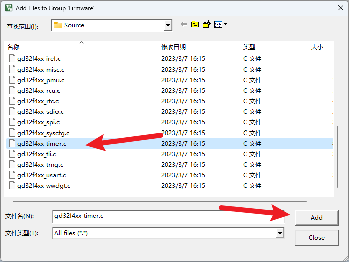
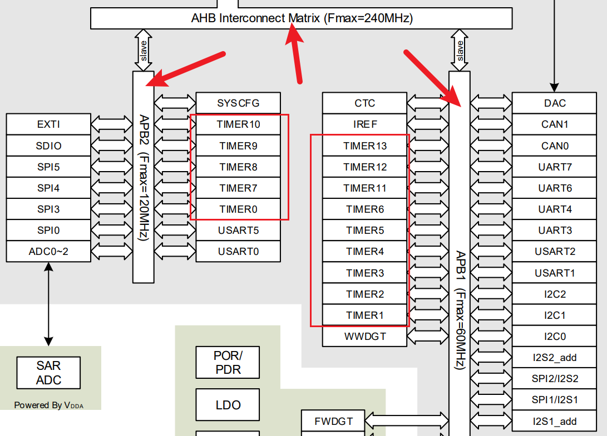
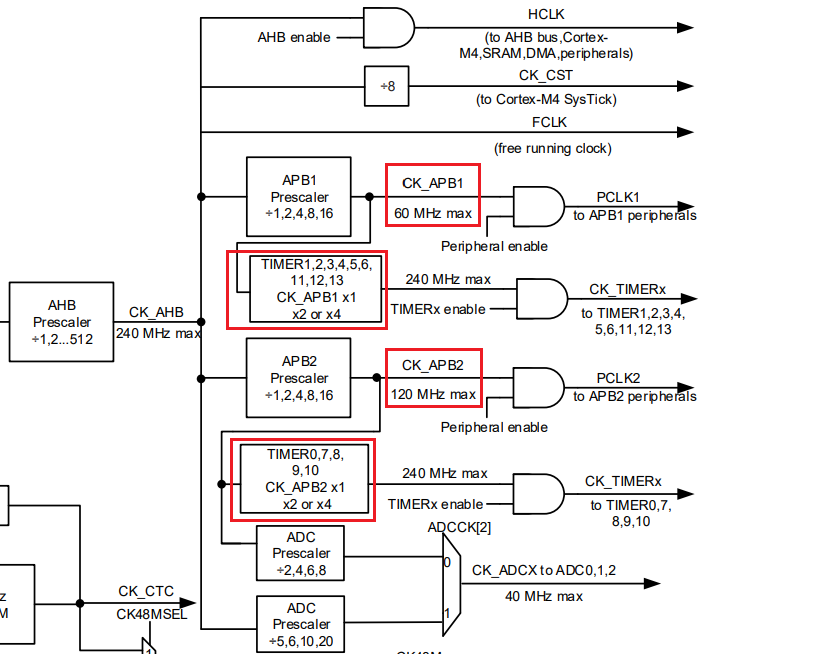
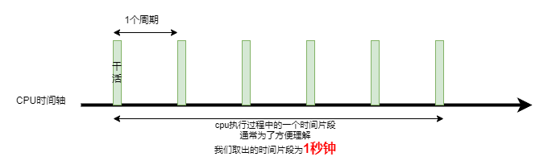
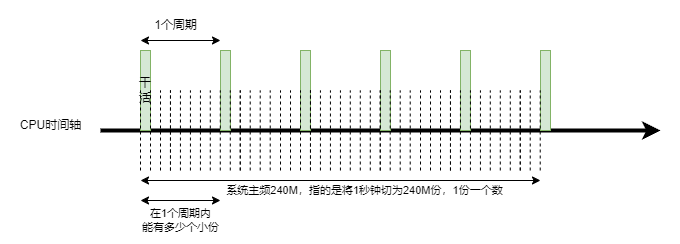

<!DOCTYPE lake>
<h2 data-lake-id="H8O7v" id="H8O7v"><span data-lake-id="u19d005ee" id="u19d005ee">学习目标</span></h2><ol list="uceb4ea8f"><li data-lake-id="udf22e937" fid="u1986649e" id="udf22e937"><span data-lake-id="u57089df7" id="u57089df7">理解基本定时器的作用</span></li><li data-lake-id="u65fb8531" fid="u1986649e" id="u65fb8531"><span data-lake-id="ua5692fff" id="ua5692fff">掌握定时器开发流程</span></li><li data-lake-id="ubda9b715" fid="u1986649e" id="ubda9b715"><span data-lake-id="u85619a81" id="u85619a81">掌握基本定时器中断处理的操作流程</span></li><li data-lake-id="u8bf97391" fid="u1986649e" id="u8bf97391"><span data-lake-id="ue216e251" id="ue216e251">掌握AHB和APB时钟查询方式</span></li><li data-lake-id="u04af5bbf" fid="u1986649e" id="u04af5bbf"><span data-lake-id="u17d41833" id="u17d41833">理解周期，分频系数，周期计数，分频计数。</span></li><li data-lake-id="uf8fba41d" fid="u1986649e" id="uf8fba41d"><span data-lake-id="u9ea00f2b" id="u9ea00f2b">掌握调试策略</span></li></ol><h2 data-lake-id="eeTFA" id="eeTFA"><span data-lake-id="u1e088ddc" id="u1e088ddc">学习内容</span></h2><h3 data-lake-id="eIBKe" id="eIBKe"><span data-lake-id="u8d7e84fd" id="u8d7e84fd">基本定时器</span></h3><p data-lake-id="ueb9e04f3" id="ueb9e04f3"><span data-lake-id="ufeadd72b" id="ufeadd72b">只能用于定时计时操作，没有输出引脚通道的定时器，在GD32中， </span><code data-lake-id="u2266c6f3" id="u2266c6f3"><span data-lake-id="uc58750e3" id="uc58750e3">TIMER5</span></code><span data-lake-id="u3978f6ba" id="u3978f6ba">和</span><code data-lake-id="u9d2165b9" id="u9d2165b9"><span data-lake-id="u9ac7c7a7" id="u9ac7c7a7">TIMER6</span></code><span data-lake-id="u17d57bf8" id="u17d57bf8">为基本定时器。</span></p><h3 data-lake-id="Onrcp" id="Onrcp"><span data-lake-id="ued507891" id="ued507891">开发流程</span></h3><ol list="uc2a92a0c"><li data-lake-id="u16d91a0c" fid="udaef0291" id="u16d91a0c"><span data-lake-id="ub66ef26b" id="ub66ef26b">添加Timer依赖</span></li><li data-lake-id="u04a778bc" fid="udaef0291" id="u04a778bc"><span data-lake-id="u98b5cbc6" id="u98b5cbc6">初始化Timer</span></li><li data-lake-id="ud1b844e9" fid="udaef0291" id="ud1b844e9"><span data-lake-id="u4be97221" id="u4be97221">实现Timer中断逻辑</span></li></ol><h4 data-lake-id="krNRU" id="krNRU"><span data-lake-id="uf0526a0e" id="uf0526a0e">Timer依赖添加</span></h4><p data-lake-id="u01b5ad41" id="u01b5ad41"><span data-lake-id="udc12b273" id="udc12b273">双击项目栏中的组</span><code data-lake-id="ue6650f51" id="ue6650f51"><span data-lake-id="u0f45ba0b" id="u0f45ba0b">Firmware</span></code><span data-lake-id="u5b7a5ca9" id="u5b7a5ca9">，来到标准库源码目录下，添加</span><code data-lake-id="u21349e6b" id="u21349e6b"><span data-lake-id="u13275d35" id="u13275d35">gd32f4xx_timer.c</span></code><span data-lake-id="u72b95a93" id="u72b95a93">文件。</span></p><p data-lake-id="u49514a85" id="u49514a85"></p><h4 data-lake-id="HUjUZ" id="HUjUZ"><span data-lake-id="ua1bfcaf8" id="ua1bfcaf8">Timer初始化</span></h4><span class="yuque-card-unsupported">[codeblock]</span><h4 data-lake-id="EAYNA" id="EAYNA"><span data-lake-id="ub146012a" id="ub146012a">Timer中断函数</span></h4><span class="yuque-card-unsupported">[codeblock]</span><h3 data-lake-id="jLlfF" id="jLlfF"><span data-lake-id="u7e8a95ed" id="u7e8a95ed">倍频</span></h3><p data-lake-id="u104d494a" id="u104d494a"><span data-lake-id="u55bf8de6" id="u55bf8de6">要了解倍频，就得从总线和时钟树给大家说起。</span></p><p data-lake-id="u0409eb58" id="u0409eb58"></p><p data-lake-id="ud04e800e" id="ud04e800e"><span data-lake-id="ua932dd8d" id="ua932dd8d">AHB是高级高性能总线，时钟频率极高，在GD32F4中，可高达240MHZ。</span></p><p data-lake-id="u3d178bbd" id="u3d178bbd"><span data-lake-id="u7fbf3f80" id="u7fbf3f80">我们的Timer作为外设，他并没有直接采用AHB总线，采用的是APB。根据结构框图，我们可以知道，14个Timer中，有的采用APB1，有的采用APB2。对于这两个外设总线，频率也各不相同。</span></p><p data-lake-id="u29a1794c" id="u29a1794c"><span data-lake-id="ue2a17632" id="ue2a17632">AHB的总线频率，其实就是我们系统时钟频率。</span></p><p data-lake-id="u7342ecdb" id="u7342ecdb"></p><p data-lake-id="ua37b6dbb" id="ua37b6dbb"><span data-lake-id="ud4acff41" id="ud4acff41">APB外设总线，其实和系统时钟总线是会存在倍差的，我们的代码执行的依据是系统时钟。因此我们代码执行的时钟和APB外设的时钟也存在倍差。</span></p><p data-lake-id="udfcb0f05" id="udfcb0f05"><span data-lake-id="uf20a5c50" id="uf20a5c50">简单理解，天上一年，地下一天。AHB的1秒钟，就是APB1的4秒，是APB2的2秒。</span></p><p data-lake-id="u0a261e46" id="u0a261e46"><span data-lake-id="u8a8dfbb5" id="u8a8dfbb5">​</span><br/></p><p data-lake-id="u92524349" id="u92524349"><span data-lake-id="uad46ffe4" id="uad46ffe4">我们在初始化代码中：</span></p><span class="yuque-card-unsupported">[codeblock]</span><p data-lake-id="u35e55ebd" id="u35e55ebd"><span data-lake-id="ue38c72a6" id="ue38c72a6">进行了以上逻辑的倍频，倍频了4倍。</span></p><p data-lake-id="u70802327" id="u70802327"><span data-lake-id="u9d45b71a" id="u9d45b71a">我们在此需要理解几个问题：</span></p><ol list="u6b22a802"><li data-lake-id="ued5302c5" fid="u06e74b4e" id="ued5302c5"><span data-lake-id="u58395f0d" id="u58395f0d">为什么要倍频？</span></li><li data-lake-id="ucfdcd47c" fid="u06e74b4e" id="ucfdcd47c"><span data-lake-id="u33a9ca2a" id="u33a9ca2a">为什么要倍频4倍？</span></li></ol><p data-lake-id="uc802fb89" id="uc802fb89"><span data-lake-id="u5928a467" id="u5928a467">我们要认识到，其实可以不需要倍频的。倍频的目的其实就是消除程序编码时钟频率切换带给程序员的理解和转换问题。</span></p><p data-lake-id="u651b30bb" id="u651b30bb"><span data-lake-id="u060132da" id="u060132da">程序员都知道主频，但是不一定都知道某些外设有独立的频率，而且还和主频不同，想当然的理解为就是主频。</span></p><p data-lake-id="u356ad2e3" id="u356ad2e3"><span data-lake-id="udb1d5003" id="udb1d5003">程序员这些频率都知道，但是每次都要去查一下，再算一下，麻烦。</span></p><p data-lake-id="u0f2c2719" id="u0f2c2719"><span data-lake-id="ud6111443" id="ud6111443">因此，通常我们就直接倍频到和系统频率相同，再也不用去考虑一些繁琐的问题。</span></p><p data-lake-id="uef77fbe9" id="uef77fbe9"><span data-lake-id="u4cdaf19d" id="u4cdaf19d">​</span><br/></p><h3 data-lake-id="pn4OQ" id="pn4OQ"><span data-lake-id="ue4280287" id="ue4280287">关心的内容</span></h3><span class="yuque-card-unsupported">[codeblock]</span><ul list="u899f8045"><li data-lake-id="u49efee16" fid="u9596ddd5" id="u49efee16"><span data-lake-id="u49f21827" id="u49f21827">哪个定时器</span></li><li data-lake-id="u2f61e43c" fid="u9596ddd5" id="u2f61e43c"><span data-lake-id="u970b332e" id="u970b332e">定时器倍频配置</span></li><li data-lake-id="u51891e79" fid="u9596ddd5" id="u51891e79"><span data-lake-id="ud1493cf9" id="ud1493cf9">定时器分频计数</span></li><li data-lake-id="ub0423b37" fid="u9596ddd5" id="ub0423b37"><span data-lake-id="ufd89f707" id="ufd89f707">定时器周期计数</span></li></ul><h3 data-lake-id="ZMgvD" id="ZMgvD"><span data-lake-id="u247b6bb9" id="u247b6bb9">重要的关键词</span></h3><h4 data-lake-id="uUcr7" id="uUcr7"><span data-lake-id="ue5a96be7" id="ue5a96be7">周期和频率</span></h4><p data-lake-id="u3015e7b6" id="u3015e7b6"><span data-lake-id="u428bf0bf" id="u428bf0bf">周期是时间单位，我们理解为在单位时间内，干一件事情的触发时间。</span></p><p data-lake-id="ub2ea6186" id="ub2ea6186"><span data-lake-id="uee3b0708" id="uee3b0708">例如，1秒钟我们触发五次中断函数。</span></p><p data-lake-id="u0e6df8a5" id="u0e6df8a5"><span data-lake-id="ua54fecc9" id="ua54fecc9">那么触发一次中断函数，就需要0.2秒。</span></p><p data-lake-id="uc39e5a6e" id="uc39e5a6e"><span data-lake-id="u14609bf8" id="u14609bf8">这里的0.2秒钟就是一个周期。</span></p><p data-lake-id="ud1828b88" id="ud1828b88"><span data-lake-id="ud0e86ddd" id="ud0e86ddd">周期和频率是反的，以上面的说法为例，0.2秒是一个周期，1秒钟就有5个这样的周期。</span></p><span class="yuque-card-unsupported">[codeblock]</span><p data-lake-id="u00cbc479" id="u00cbc479"></p><h4 data-lake-id="t0ZtK" id="t0ZtK"><span data-lake-id="u0a55438b" id="u0a55438b">周期计数</span></h4><p data-lake-id="uc5be3cf2" id="uc5be3cf2"><span data-lake-id="u244b8827" id="u244b8827">周期计数，是一个数值，是指我在一个周期时间内，数的累加数值是多少。</span></p><p data-lake-id="u66b397ab" id="u66b397ab"><span data-lake-id="u3feae581" id="u3feae581">这里必须结合系统主频来说。</span></p><p data-lake-id="u3bc21faf" id="u3bc21faf"></p><p data-lake-id="u2ae3c1ce" id="u2ae3c1ce"><span data-lake-id="uecab9f75" id="uecab9f75">主频240M，指的是将1秒钟分为240M份。用数数来说，就是数240M次就是1秒钟。</span></p><p data-lake-id="u1c79ac57" id="u1c79ac57"><span data-lake-id="ub6aa825d" id="ub6aa825d">周期是具体的时间值，例如一个周期是</span><code data-lake-id="ube01f0a7" id="ube01f0a7"><span data-lake-id="uaa12d55b" id="uaa12d55b">0.2秒</span></code><span data-lake-id="u9806fa48" id="u9806fa48">,按照主频切的份数，这个时间可以分到几份，或者用数数来说，能数几下。</span></p><p data-lake-id="u527a4631" id="u527a4631"><span data-lake-id="u8822fc3b" id="u8822fc3b">周期计数就是表示这个份数的。</span></p><p data-lake-id="ub72dffe5" id="ub72dffe5"><span data-lake-id="ubbc2b987" id="ubbc2b987">特别注意的是，其实我们写代码过程中，写入都是周期计数：</span></p><span class="yuque-card-unsupported">[codeblock]</span><p data-lake-id="ube1d68bc" id="ube1d68bc"><span data-lake-id="u24b27c20" id="u24b27c20">上面代码中，其实就是配置的周期计数，将主频切为10000份。理解起来就是如下公式：</span></p><span class="yuque-card-unsupported">[codeblock]</span><p data-lake-id="ua3643ef8" id="ua3643ef8"><span data-lake-id="u412fab61" id="u412fab61">值得注意的是，后面有进行减一操作，原因是，这个周期计数值最终会配置到芯片的寄存器中，芯片的寄存器计数累加的起点是0，不是1，所以我们需要减1。</span></p><p data-lake-id="u142570f8" id="u142570f8"><span data-lake-id="uaf21f692" id="uaf21f692">在这里特别需要注意的是，这个周期计数值是有范围的，这个范围取决于寄存器存储大小。GD32中timer的这个周期寄存器大小为16位，所以这个值不可以超过2的16次方，即</span><code data-lake-id="uec2fab08" id="uec2fab08"><span data-lake-id="ud9d4f4a1" id="ud9d4f4a1">65536 - 1 = 65535</span></code></p><p data-lake-id="uf221fe2b" id="uf221fe2b"><span data-lake-id="ub66e8a41" id="ub66e8a41">当前芯片为240M，根据这个特点，我们大致上可以知道最小的频率是多少：</span></p><span class="yuque-card-unsupported">[codeblock]</span><p data-lake-id="u8a344e41" id="u8a344e41"><code data-lake-id="u4ba1acda" id="u4ba1acda"><span data-lake-id="u662f0e90" id="u662f0e90">240000000 / 65536 = 3662</span></code></p><h4 data-lake-id="klOJx" id="klOJx"><span data-lake-id="u982ccd06" id="u982ccd06">分频系数和分频计数</span></h4><p data-lake-id="ub0e095cc" id="ub0e095cc"><span data-lake-id="u8da0bb3e" id="u8da0bb3e">什么是分频？</span></p><p data-lake-id="u4d81d3f5" id="u4d81d3f5"><span data-lake-id="ucc9c711d" id="ucc9c711d">例如，我们说我们采用2分频。实际含义，原来1秒钟能干完的活，现在得2秒钟干完，这个就是分频。</span></p><p data-lake-id="ud9872fb7" id="ud9872fb7"><span data-lake-id="ua89de172" id="ua89de172">分频系数，就是上面说所的2分频中的2。</span></p><p data-lake-id="u7927286f" id="u7927286f"><span data-lake-id="u5e2683da" id="u5e2683da">分频计数，是(分频系数 - 1)，这个是写入寄存器的，因为是从0开始计数，所以要减1</span></p><p data-lake-id="u72e18736" id="u72e18736"><span data-lake-id="ufb41d070" id="ufb41d070">​</span><br/></p><h4 data-lake-id="Fpst8" id="Fpst8"><span data-lake-id="ucea136a3" id="ucea136a3">完整代码</span></h4><span class="yuque-card-unsupported">[codeblock]</span><h2 data-lake-id="f0hXM" id="f0hXM"><span data-lake-id="u61f40120" id="u61f40120">练习</span></h2><ol list="u75e945d8"><li data-lake-id="u0c93a7e7" fid="udc475c2e" id="u0c93a7e7"><span data-lake-id="u853b201e" id="u853b201e">调试Timer5 和 Timer6的定时器回调。</span></li></ol>